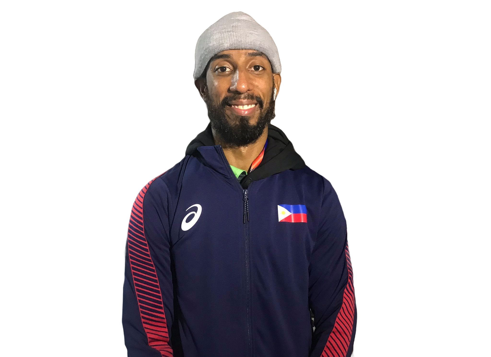

Samuel Morrison
- 2008 — UAAP (University of Santo Tomas / Tiger Jins)
- 2011 — Summer Universiade (Gwangju) — Silver (Taekwondo / Universiade)
- 2013 — Swiss Open (Lausanne) — Bronze (senior division)
- 2014 — Asian Championships (Tashkent) — Bronze (-74 kg)
- 2014 — Asian Games (Incheon) — Bronze (men’s -74 kg)
- 2015 — Southeast Asian Games (Singapore) — Gold
- 2017 — Southeast Asian Games (Kuala Lumpur) — Gold
- 2018 — Asian Games (Jakarta / Palembang) — reached Quarterfinals
- 2019 — Southeast Asian Games (Manila) — Gold
- 2019 — World Championships — advanced rounds noted
- 2022 — 31st Southeast Asian Games (Vietnam) — Bronze
- 2023 — SEA Games (Phnom Penh) — Gold
